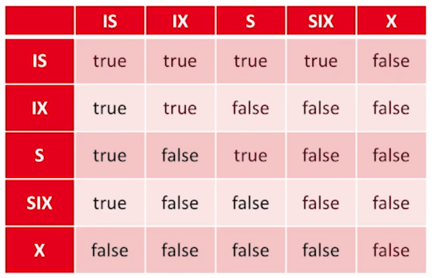

Locking#
The locking scheme we will be using is called the Two Phase Lock (2PL) to guarantee conflict serializable schedule. The two phases refer to the phases of individual transactions. Those are:
Aquisition Phase
Transaction begins by attempting to gather all the locks it can will need. Afterso, we have entered the lockpoint
Release Phase
Transaction will begin releasing (all at once if Strict 2PL). Transaction can get no more lock after releasing at least one.
Types of Locks#
Shared Lock (S or R): A lock for reading.
More than one transaction can have a shared lock.
Cannot use the shared lock unless the exlusive lock is unlocked
Exclusive Lock (X or W): A lock for writing
Only one transaction can have a write lock.
Can only get a exclusive lock if both shared and exclusive are unlocked.
Stirct 2PL and Cascade Abort#
Cascade abort
When transaction abort causes other transaction to abort and undo. This occurs because when a transaction release its lock to another transaction, that transaction will continue its actions regarldess if there’s an abort ahead.
The fix for cascade abort is to make sure all transaction:
1. Release all locks together.
2. Only release during a commit or abort.
This is the the policy Strict 2PL
Lock Manager#
The lock manager (LM) maintains a table (often hash table) called the that stores the following columns:
Object name
Set of transactions ids currently with that lock
Lock type
A priority waiting queue of transactions needing the lock.
Deadlock#
A deadlock occurs when the wait-for diagram is cyclic. A waits-for diagram is the directed graph representing the lock manager. The nodes are transactions and the edges are the relations where a transaction waits for (points to) another transaction to release.
Deadline Avoidance#
Deadlock avoidance determines the action if some transaction wants a lock that’s taken from another.
Wait-Die
Higher priority: wait
Lower priority: die
Wound-Wait
Higher priority: take over
Lower priroity: wait
Deadlock Detection#
The lock manager can detect deadlocks by creating a waits-for graph. Upon finding a cycle, we can abort one of the transaction.
Multi-Granularity Locking#
We have the issue on how granular should we be locking (e.g., tables, pages, records). To solve this we introduce new locks called the intent locks:
There are 3 intent locks IS, IX, SIX.
To get an S or IS lock you need an IS or IX lock on the parent node.
To get an X, IX, or SIX you need a IX or SIX on the parent node.
Any node getting an \(S\) or \(X\) lock implies that the lower level also has the same lock.
Lock Compatibility#
The following tables reperesents combination of locks that do not conflict given two different transactions on the locking the same object.
{ width=50% }